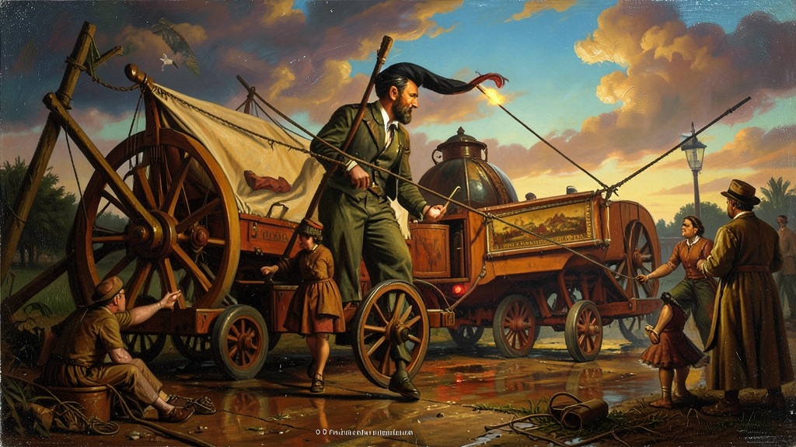
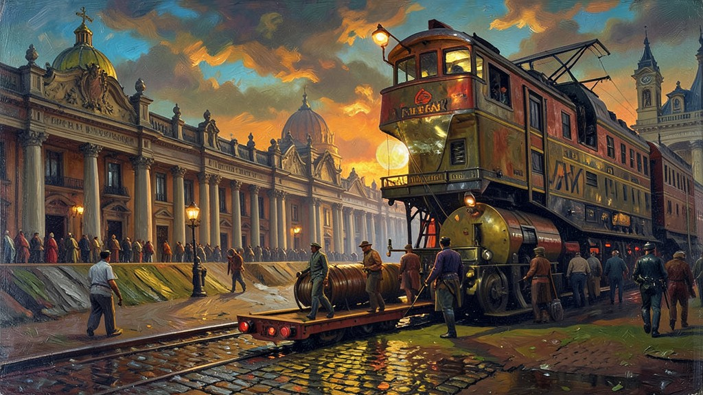
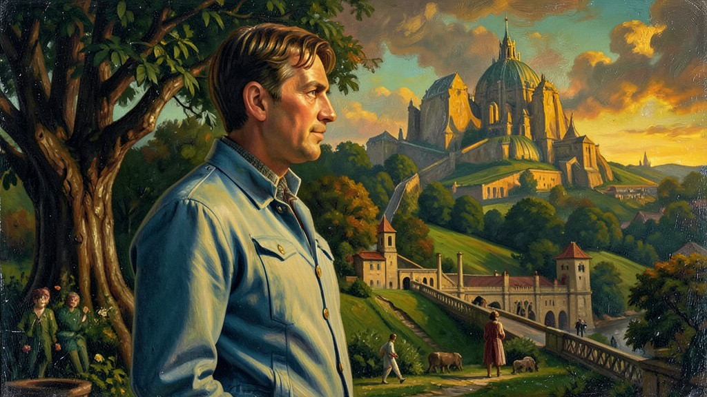

"A Era Mauá foi um oásis de progresso em um Brasil rural e escravocrata. Irineu Evangelista de Sousa tentou transformar o país com ferrovias e bancos, enfrentando a fúria da elite agrária."
A **Era Mauá** ocorreu durante o Segundo Reinado (D. Pedro II) e foi impulsionada por fatores econômicos específicos. O principal deles foi a **Tarifa Alves Branco (1844)**, que aumentou o imposto de importação de produtos estrangeiros para até 60%, protegendo a indústria nacional nascente. Outro fator crucial foi a proibição do tráfico negreiro em 1850 (Lei Eusébio de Queirós), que liberou capitais que antes eram gastos na compra de seres humanos para serem investidos em ferrovias, estaleiros, iluminação a gás no Rio de Janeiro e bancos. O protagonista desse período foi o **Barão e depois Visconde de Mauá**. Ele foi o responsável pela primeira ferrovia do país (Estrada de Ferro Mauá), por fundar a primeira companhia de navegação a vapor do Amazonas e por instalar o cabo telegráfico submarino ligando o Brasil à Europa. Mauá defendia o fim da escravidão e o trabalho livre assalariado como base para o consumo de massa. No entanto, suas ideias batiam de frente com a elite dos cafeicultores e o conservadorismo de D. Pedro II. Em 1860, a **Tarifa Silva Ferraz** baixou novamente os impostos de importação, expondo a indústria de Mauá à concorrência desleal dos produtos ingleses. Mauá acabou falindo em 1875, vítima de uma política que preferiu manter o Brasil como uma 'fazenda do mundo' em vez de uma nação industrializada.
1. O Capital do Tráfico e a Modernização
Com a Lei Eusébio de Queirós (1850), o dinheiro dos traficantes de escravos ficou 'sobrando' no mercado. Mauá percebeu que esse capital poderia financiar a modernização do Império. Ele multiplicou o crédito bancário e investiu pesado no porto do Rio de Janeiro. Pela primeira vez, o Brasil teve um empresário de visão global, que buscava criar uma economia de base industrial e financeira.

2. Ferrovias e Telégrafo: Encurtando Distâncias
As ferrovias de Mauá substituíram as tropas de mulas que levavam o café nas costas. Com o apoio inicial do governo, ele trouxe a tecnologia de trens e navios a vapor da Inglaterra. O cabo telegráfico foi outra revolução: as notícias da Europa que demoravam meses para chegar em caravelas, agora chegavam em minutos por impulsos elétricos no fundo do mar.

3. O Conflito com a Elite Agrária
Para os senhores de engenho e cafeicultores, Mauá era um 'intruso'. Sua defesa do trabalho livre irritava quem dependia da escravidão. Além disso, a elite parlamentar era ligada aos interesses ingleses, e Mauá tentava fabricar aqui o que o Brasil comprava de Londres. Essa elite conspirou para retirar o apoio do governo às fábricas dele, preferindo manter o pacto café-dependente com a Inglaterra.

4. Tarifa Alves Branco vs. Silva Ferraz
Alves Branco foi o 'pai' da indústria brasileira por acidente: o governo precisava de dinheiro e subiu os impostos. Silva Ferraz foi o 'carrasco': sob pressão inglesa, ele baixou os impostos de peças e máquinas importadas, matando a produção nacional. Foi um exemplo clássico de desindustrialização precoce por decisão política da monarquia brasileira.
5. O Legado e a Falência
Mauá faliu como um homem honrado, pagando todas as suas dívidas com a venda de suas propriedades. Sua história serve para mostrar que o Brasil já teve projetos de desenvolvimento soberanos, mas que foram abortados em nome do modelo agrário exportador. A industrialização brasileira só seria retomada de fato quase cem anos depois, com Getúlio Vargas nos anos 1930.
TEXTO DE APOIO
A Era Mauá (1844-1875) representa um fugaz momento de industrialização e modernização no Brasil Imperial, personificado na figura de Irineu Evangelista de Sousa, o Barão de Mauá. Em um país dominado pelo latifúndio escravista, Mauá fundou as primeiras ferrovias, companhias de iluminação a gás e o estaleiro Ponta da Areia. Esse surto industrial foi estimulado pela Tarifa Alves Branco (1844), que aumentou os impostos sobre produtos importados, e pelo fim do tráfico negreiro, que liberou capitais para novos investimentos econômicos.
A mentalidade empreendedora de Mauá colidia frontalmente com a aristocracia rural brasileira, que via com desconfiança a modernização capitalista e o trabalho assalariado. A posterior Tarifa Silva Ferraz (1860), que reduziu as taxas de importação, e a falta de apoio do Estado brasileiro sabotaram os empreendimentos de Mauá, levando-o à falência. Esse episódio demonstra a resistência estrutural do Império ao desenvolvimento industrial e a preferência da elite pela manutenção de uma economia agrário-exportadora subordinada à Inglaterra.
Estudar Mauá para o Enem permite analisar as tensões entre o Brasil 'arcaico' (latifundiário) e o desejo de um Brasil 'moderno' (industrial). Suas iniciativas foram fundamentais para a integração territorial e a urbanização do país, lançando as bases de uma infraestrutura que seria aproveitada décadas depois. A trajetória de Mauá simboliza os desafios de inovação em sociedades periféricas e a complexa relação entre o capital privado e os interesses dos grandes proprietários de terra vinculados ao Estado.
Mini Games
Arcade Histórico
Escolha um dos jogos abaixo para fixar o aprendizado deste módulo: